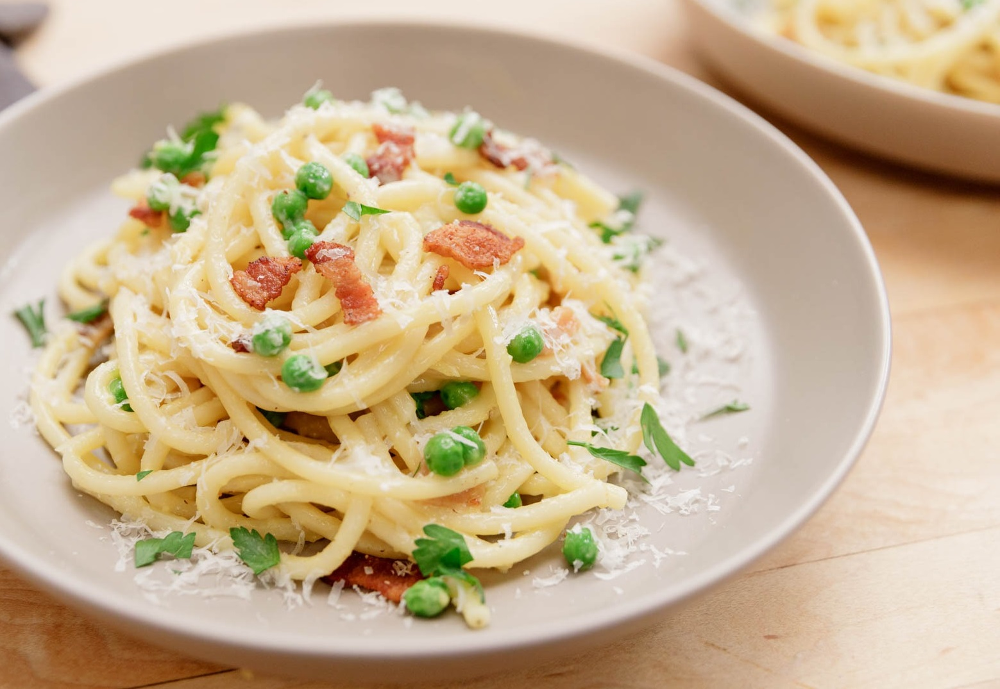
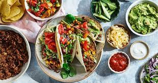
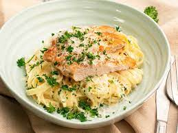

Våra Recept
-
Pasta Carbonara
En klassisk italiensk pastarätt med bacon, ägg, parmesanost och svartpeppar.
Ingredienser:
- 200 g spaghetti
- 100 g pancetta eller bacon
- 2 äggulor
- 50 g riven parmesanost
- Nymalen svartpeppar efter smak
Tillagning:
- Koka spaghettin i rikligt med saltat vatten enligt förpackningsanvisningarna.
- Stek pancettan eller baconet i en stekpanna tills det är knaprigt.
- I en skål, vispa äggulor, riven parmesanost och nymalen svartpeppar tills det är väl blandat.
- När spaghettin är färdigkokt, häll av vattnet och blanda den varma pastan med den stekta pancettan/baconet. Se till att pastan är ordentligt varm så att den smälter osten.
- Tillsätt ägg- och ostblandningen och rör om väl tills såsen är krämig och täcker pastan.
- Servera genast med extra parmesanost och svartpeppar på toppen.

-
Tacos
Tacos med nötfärs, guacamole, salsa, och grönsaker i mjuka tortillabröd.
Ingredienser:
- 400 g nötfärs
- 8 mjuka tortillabröd
- 1 kopp guacamole
- 1 kopp salsa
- Grönsaker (tomater, lök, sallad) efter smak
Tillagning:
- Stek nötfärsen i en stekpanna tills den är genomstekt.
- Värm tortillabröden i en torr stekpanna eller ugn tills de är mjuka och varma.
- Förbered guacamole, salsa och grönsaker enligt önskemål.
- Fyll varje tortilla med nötfärs, guacamole, salsa och grönsaker.
- Vik tortillan och servera genast.

-
Kyckling Alfredo
Krämig kyckling Alfredo med färsk pasta och vitlökssås.
Ingredienser:
- 300 g färsk pasta
- 2 kycklingbröstfiléer
- 2 dl grädde
- 3 vitlöksklyftor, finhackade
- 1 kopp riven parmesanost
- Smör och olivolja för stekning
- Salt och svartpeppar efter smak
Tillagning:
- Koka pastan i saltat vatten enligt förpackningsanvisningarna. Häll av vattnet när den är färdigkokt.
- Krydda kycklingfiléerna med salt och svartpeppar. Stek dem i smör och olivolja tills de är genomstekta. Ta bort kycklingen och låt den vila i några minuter innan du skär den i skivor.
- I samma stekpanna, tillsätt mer smör och stek den finhackade vitlöken tills den är doftande och gyllenbrun.
- Häll i grädden och rör om. Tillsätt den riven parmesanosten och rör om tills såsen är krämig.
- Tillsätt den kokta pastan och rör om tills pastan är väl täckt med såsen.
- Tillsätt de skivade kycklingfiléerna och blanda försiktigt.
- Servera varmt med extra parmesanost på toppen.

-
Grekisk Sallad
En fräsch sallad med tomater, gurka, fetaost, oliver och tzatziki.
Ingredienser:
- 3 stora tomater, tärnade
- 1 gurka, tärnad
- 200 g fetaost, tärnad
- 1/2 kopp svarta oliver
- 1/4 kopp hackad rödlök
- Färsk oregano eller mynta (valfritt)
- 1 kopp tzatziki-sås
Tillagning:
- Blanda tomater, gurka, fetaost, svarta oliver och rödlök i en stor skål.
- Strö över färsk oregano eller mynta om så önskas.
- Servera med tzatziki-sås på sidan.